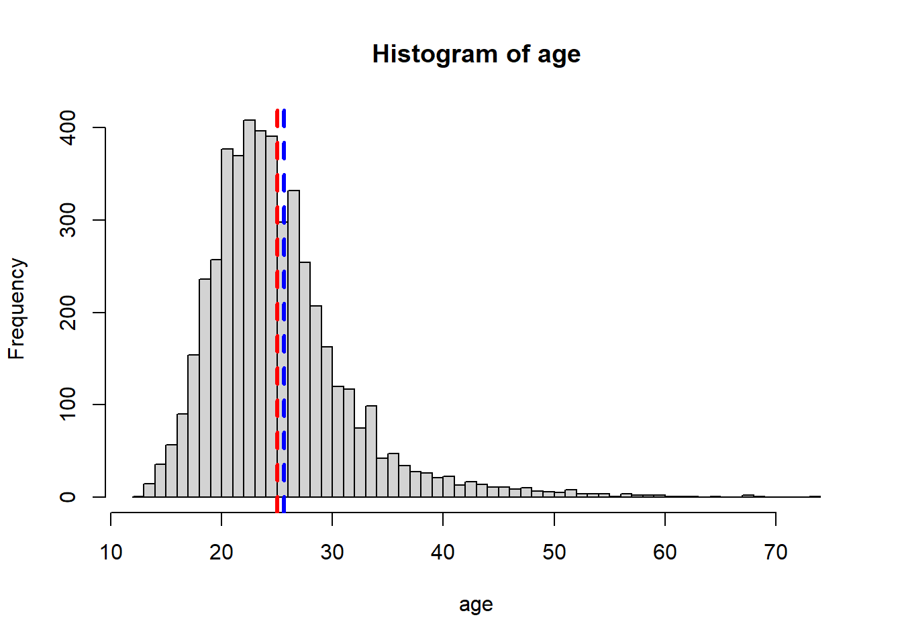
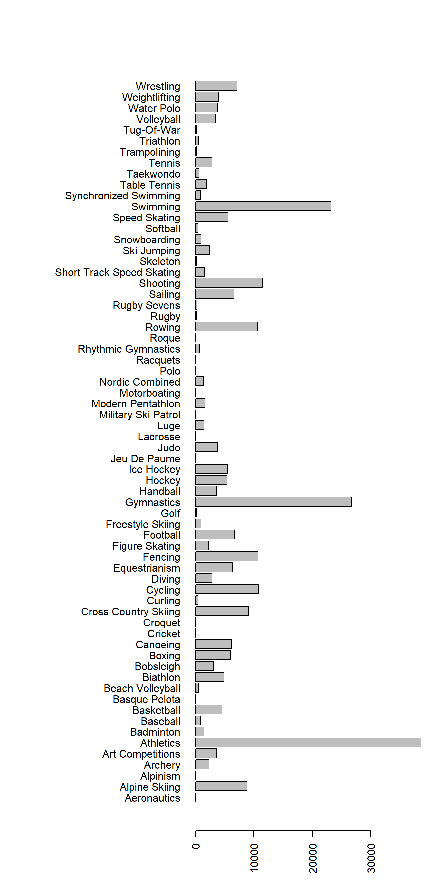

5.3 Summary Statistics
Reading and writing data is useful, but the power of R is doing interesting things with the data!
Let’s perform a few operations with the Olympic athletes data to demonstrate some important functions for data analysis.
As we’ve seen, the summary function automatically performs some summary statistics on each column of a data frame.
Let’s see how to produce these and other results manually.
5.3.1 Quantitative Variables
To showcase the functions R provides to summarize quantitative variables, we’ll look at the Age column of our data frame, which is stored as an integer vector in R.
What other R data types might be used to store quantitative data?
However, Age contains NA values, as we know from running the following function:
[1] 183is.na function returns a logical array which is true whenever the Age column is NA. So why does the sum function produce the number of NA’s?
As a cleaning step, we must first remove the NA values:
age <- athletes$Age # assign the Ages column to a variable
age <- age[!is.na(age)] # extract only the elements which are not NA (more on this when we discuss advanced indexing)This type of “data cleaning” is a very common first step when performing data analysis. You will get more opportunities to clean data later in the course.
Here are some functions R provides to summarize quantitative variables.
age_min <- min(age) # find the minimum age
age_med <- median(age) # find the median age
age_max <- max(age) # find the maximum age
age_mean <- mean(age) # find the average age
age_sd <- sd(age) # find the standard deviation of age
age_var <- var(age) # find the variance of ageLet’s put all these results in a named list. In the following code, read the comments carefully to understand how the code is being organized onto multiple lines.
# Create a list containing all the stats
age_stats <- list( # R knows that this command continues until a closed parenthesis
min = age_min,
median = age_med,
max = age_max,
mean = age_mean,
sd = age_sd,
var = age_var
) # this could all go on one line, but it looks more organized this way.
age_stats$min
[1] 12
$median
[1] 25
$max
[1] 74
$mean
[1] 25.65373
$sd
[1] 6.495693
$var
[1] 42.19402weight_stats with the mean, median, and standard deviation of the Weight column.
If you get NA values for the statistics, you should include the na.rm=T argument like so: mean(weight, na.rm=T), to remove the NA values before computing the statistics.
Visualization will be discussed more later, but we’ll show one plot now, to show how multiple summary statistics can be shown at the same time.
hist(age, breaks=50)
abline(v=age_mean, col="blue", lty=2, lwd=3)
abline(v=age_med, col="red", lty=2, lwd=3)
It looks like the distribution of Age is right skewed, consistent with the fact that the mean is greater than the median.
5.3.2 Categorical Variables
To showcase the functions R provides for categorical variables, we’ll look, at the Sport column, which is stored as a character vector in R.
What other R data types might be used to store categorical data?
Are there any NA values in this column?
[1] 0It turns out the answer is no, so there’s no need to remove anything. In a character vector like this, we expect there to be many duplicated values. We can see a list of all the unique values with the following:
[1] "Hockey" "Wrestling"
[3] "Swimming" "Basketball"
[5] "Biathlon" "Speed Skating"
[7] "Fencing" "Weightlifting"
[9] "Equestrianism" "Archery"
[11] "Cross Country Skiing" "Gymnastics"
[13] "Tennis" "Athletics"
[15] "Cycling" "Bobsleigh"
[17] "Shooting" "Sailing"
[19] "Alpine Skiing" "Art Competitions"
[21] "Canoeing" "Football"
[23] "Rowing" "Figure Skating"
[25] "Nordic Combined" "Judo"
[27] "Short Track Speed Skating" "Water Polo"
[29] "Snowboarding" "Taekwondo"
[31] "Diving" "Handball"
[33] "Softball" "Boxing"
[35] "Tug-Of-War" "Ski Jumping"
[37] "Table Tennis" "Ice Hockey"
[39] "Modern Pentathlon" "Golf"
[41] "Baseball" "Volleyball"
[43] "Luge" "Badminton"
[45] "Trampolining" "Curling"
[47] "Beach Volleyball" "Polo"
[49] "Rugby Sevens" "Synchronized Swimming"
[51] "Triathlon" "Skeleton"
[53] "Freestyle Skiing" "Military Ski Patrol"
[55] "Lacrosse" "Rhythmic Gymnastics"
[57] "Rugby" Using the numbers in brackets to the left as our guide, we can see that there are 57 unique values, but this can also be determined by running:
[1] 57It would be nice to see how many times each entry occurs in the data set.
This is what the table function does:
sport
Alpine Skiing Archery Art Competitions
148 41 64
Athletics Badminton Baseball
728 32 19
Basketball Beach Volleyball Biathlon
98 18 100
Bobsleigh Boxing Canoeing
53 121 112
Cross Country Skiing Curling Cycling
174 8 205
Diving Equestrianism Fencing
56 121 184
Figure Skating Football Freestyle Skiing
44 138 9
Golf Gymnastics Handball
5 498 61
Hockey Ice Hockey Judo
101 83 76
Lacrosse Luge Military Ski Patrol
1 25 2
Modern Pentathlon Nordic Combined Polo
37 25 4
Rhythmic Gymnastics Rowing Rugby
9 190 4
Rugby Sevens Sailing Shooting
6 126 218
Short Track Speed Skating Skeleton Ski Jumping
23 4 45
Snowboarding Softball Speed Skating
19 10 104
Swimming Synchronized Swimming Table Tennis
399 9 36
Taekwondo Tennis Trampolining
10 45 4
Triathlon Tug-Of-War Volleyball
6 5 50
Water Polo Weightlifting Wrestling
79 85 123 Let’s save this table to a list as before:
# assign summary statistics to variables
sport_n_unique <- length(unique(sport))
sport_counts <- table(sport)
# combine them into a list
sport_stats <- list(
number_unique = sport_n_unique,
counts = sport_counts
)Again, a visualization may be useful here:
par(mar=c(5,15,4,2) + 0.1) # command to make the labels fit
barplot(table(sport), horiz=T, las=2) # bar plot
So we see that in our data set, athletics, swimming, and gymnastics have the most athletes (remember, each row is an athlete).
season_stats with the a table of counts for the Season variable.
Height, Weight, and Sex variables? Can you give an example of what might happen? What other variables may be impacted? What R code would you write to determine if an athlete occurred multiple times in the data frame?
5.3.3 Saving an RData file
Finally, we may want to save these results for use in R later. First, we’ll create a new list to put our two stats list in (remember, we can have lists inside of other lists!).
Remember that the names function retrieves the column names for a data frame? It also retrieves the names of a list (after all, a data frame is just a fancy list, right?)!
The following commands may be useful for remembering what the contents of our stats list:
names(athlete_stats)names(athlete_stats$age)names(athlete_stats$sport)
To save these results, we can use the saveRDS function:
Later, we can use the following command to load the RDS file back into R:
rm(athlete_stats) # remove athlete stats to prove we are loading it from the hard drive
athlete_stats <- readRDS("data_clean/athlete_stats.rds") # load the RDS file and name it athlete_stats
athlete_stats$age # show that we have loaded the data by printing the age stats$min
[1] 12
$median
[1] 25
$max
[1] 74
$mean
[1] 25.65373
$sd
[1] 6.495693
$var
[1] 42.19402The RDS format works for any R Object, not just lists, so it can be used for vectors, matrices, factors, and even functions.
Any feedback for this section? Click here